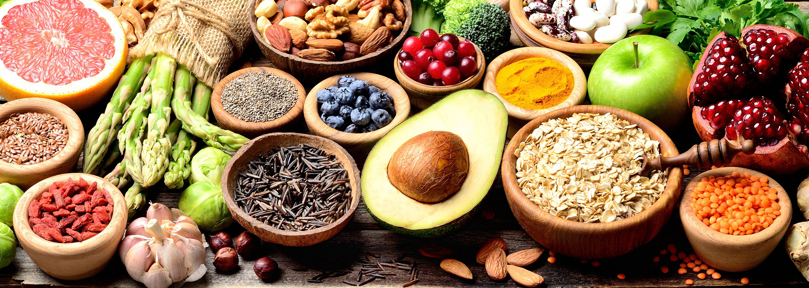

Alimentación Basada en plantas
¿Qué es?
Es aquella alimentación que se caracteriza por consumir:
Frutas y verduras.
Frutos secos.
Legumbres.
Semillas.
Aceites vegetales como el de oliva.
Granos enteros.
*Elimina el consumo de alimentos de origen animal.*
Imagen de alimentos

Pros
La alimentación basada en plantas es un estilo de vida
que llevada de manera estructurada y controlada por un nutricionista
puede traer múltiples beneficios a la salud física y mental.
También es una buena forma de ayudar al planeta.